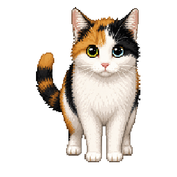

<!doctype html>
<html lang="zh-CN">
<meta charset="utf-8">
<meta name="viewport" content="width=device-width, initial-scale=1">
<title>猫猫 · 摇耳待机预览</title>
<style>
  * { box-sizing: border-box; }
  body { margin: 0; min-height: 100vh; display: grid; place-items: center; background: #edf7fc; color: #284f69; font-family: "Microsoft YaHei UI", sans-serif; }
  main { text-align: center; padding: 24px; }
  h1 { font-size: 22px; margin: 0 0 6px; }
  p { line-height: 1.8; margin: 8px 0; }
  img { display: block; width: min(420px, 86vw); aspect-ratio: 1; image-rendering: pixelated; }
  progress { width: 230px; accent-color: #6eb9b4; }
  button { margin: 16px 0 0; padding: 9px 24px; border: 1px solid #9dced9; border-radius: 18px; color: #284f69; background: #fff8d3; font: inherit; cursor: pointer; }
  small { display: block; max-width: 420px; color: #567c8f; line-height: 1.8; }
</style>
<main>
  <h1>猫猫 · 轻轻摇耳朵</h1>
  <p>两次完整摇晃 · 每次 1 秒 · 交接时眨眼一次</p>
  
  <progress id="timeline" max="2" value="0" aria-label="动画进行时间"></progress>
  <p id="status" aria-live="polite">正在加载动画</p>
  <button id="replay" type="button">再看一次</button>
  <small>这里便于预览，会短暂休息后重播。桌宠实际在上次动作结束后随机等待 10～20 秒；与摇尾冲突时优先摇尾。</small>
</main>
<script>
  const cat = document.querySelector('#cat'), timeline = document.querySelector('#timeline'), status = document.querySelector('#status');
  const frames = Array.from({ length: 51 }, (_, n) => {
    const img = new Image(); img.src = `snapshots/19-ear-idle-${String(n).padStart(2, '0')}.png`; return img;
  });
  let start = null;
  document.querySelector('#replay').onclick = () => { start = performance.now(); };
  Promise.all(frames.map(frame => frame.decode())).then(() => {
    start = performance.now();
    function render(now) {
      const elapsed = now - start;
      const p = Math.min(1, Math.max(0, elapsed / 2000));
      cat.src = frames[Math.round(p * 50)].src; timeline.value = p * 2;
      status.textContent = p < .48 ? '第一次摇晃' : p < .64 ? '交接眨眼，开始第二次摇晃' : p < 1 ? '第二次摇晃' : '两次完成，回到原位';
      if (elapsed >= 3200) start = now;
      requestAnimationFrame(render);
    }
    requestAnimationFrame(render);
  }).catch(() => { status.textContent = '动画帧未加载，请先运行桌宠预览生成命令。'; });
</script>
</html>
